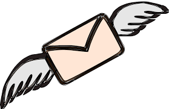

Message From Vice Chancellor
Welcome to the University of Barisal! It is our pleasure to present to you our first official website. From now on you will be able to visit us regarding any information about the university from wherever you are.
The University of Barisal stands on the bank of the Kirtonkhola in the south central region of the country- a location hailed as the ‘Best Site’ for a University outside Dhaka by Govt. & Non-Govt. several visiting team including a high powered team of UGC in 2011. Blessed with exquisite bio-diversity, scenic coastal beauty and a rich cultural heritage of its own, the region is proud to have its first-ever general public university as the University of Barisal. It was first envisioned by the Father of the Nation, Bangabandhu Sheikh Mujibur Rahman immediately after the War of Liberation and finally materialized by the daughter of the Father of the Nation, Hon’ble Prime Minister of the People’s Republic of Bangladesh, Jononetri Sheikh Hasina on 22 February 2011 through laying the foundation stone. The establishment of the University brings into reality the dreams of millions who have been cherishing the desire for higher education at their footsteps since independence.
On 24 January 2012, the University of Barisal officially started its academic journey. In session 2011-12, 400 students out of 9998 candidates have been admitted in six departments (English, Economics, Mathematics, Sociology, Marketing, Management Studies) under four faculties (Faculty of Arts, Faculty of Science, Faculty of Social Sciences and Faculty of Business Studies). In session 2013-13 out of 17,990 examinee/candidates 700 students have been admitted. Six new departments will be opened under the faculties as follows- Faculty of Science and Engineering: Department of Chemistry and Department of Computer Science & Engineering; Faculty of Bio-sciences and Agriculture: Botany and crop Sciences; Faculty of Social Sciences: Political science; Faculty of Business Studies: Finance and Banking; and Faculty of Law: Department of Law. A total of 1050 students will be admitted in the said 16 departments for the session 2013-14. The submission of online application for the session 2013-14 will take place from 4th September to 14th October 2013 as the admission tests for all units are scheduled to commence on 27th and 28th November 2013.
At present the University is being served by a group of qualified faculties blessed with youthful vigor and global outlook and a section of officers who proudly possess enviable academic feats to their names and are deeply committed to produce world class graduates in the disciplines of science, bio-sciences and agriculture, social science, arts, business and law to meet national and global demands for enlightenment and quality education. As we expect nothing less than superlative performance from students, teachers and officers alike, we have decided to award them performance-enhancing incentives on different categories. Top three students in each semester will be awarded Taka 2000.00 per month. There are special awards for best teacher, officer and staff, and there are VCs and Dean’s Awards too reserved for the most outstanding students and teachers.
The University incorporates values unique to the experiences of a coastal population living in the vicissitudes of environmental changes and passionately strives to uphold them in setting goals. The focus is not only to produce a skilled and marketable workforce for the country but one that is innovative in ideas, resilient in spirit and deeply informed of the intrinsic socio-economic patterns and lifestyle of people of this region. In that way the University is determined to act as a catalyst in major economic, social and cultural changes of the region while transforming itself into a centre of academic excellence for promotion of human, economical and technological development in Bangladesh.
Having started our journey, we already know that the path ahead is a steep one and we must go a long way to attain our mission and vision of establishing a fully technology based university with professional orientation to the field of academic research. As we proudly represent a region which has a legendary cultural past and is home to some glorious sons of the land, we declare to spare no efforts in living up to that honored task. It is therefore highly imperative that everyone associated with the university must work together and work tirelessly for the dream of transforming this institution into a centre of learning, teaching, and research. It is our hope that this website will keep visitors abreast with updated information regarding various events and academic schedules of the University while it is expected to get richer with incorporation of further facts and details in course of time.